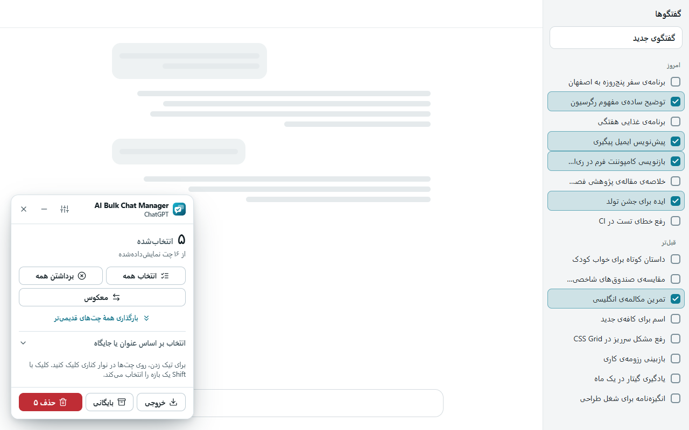
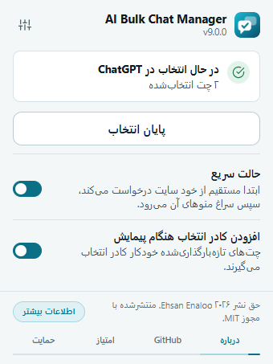
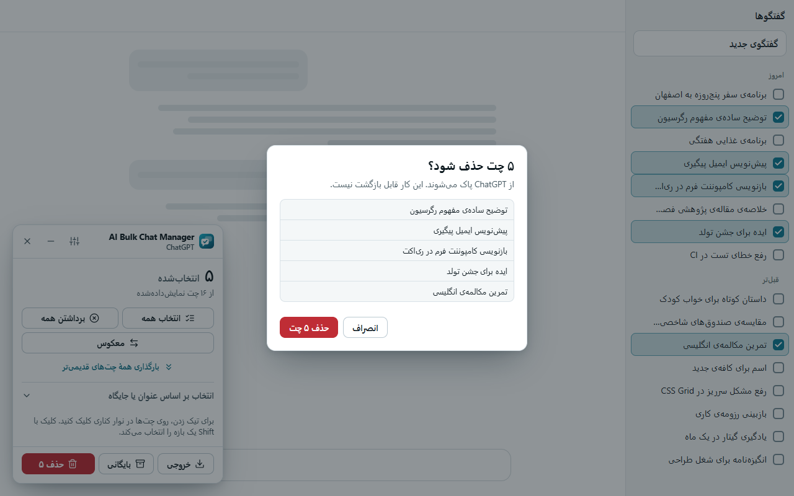
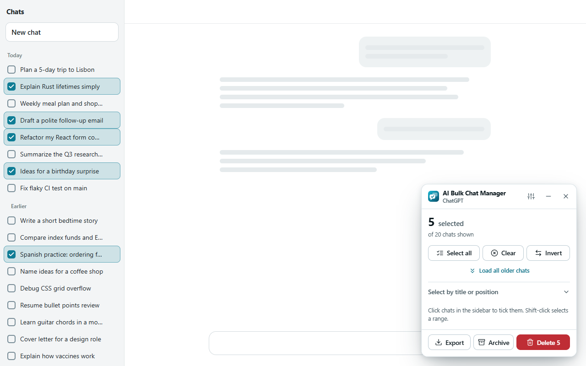
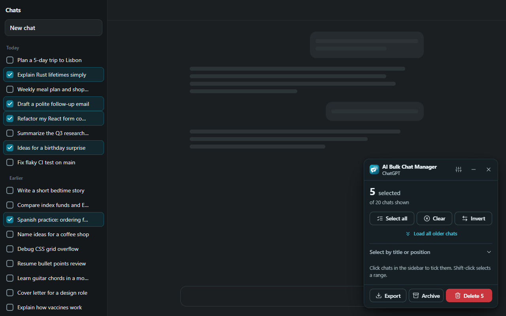

Language#
The extension’s screens (popup, panel, confirmation, results and Options page) come in 11 languages. Change it in Options, Appearance, Language.
| Language | Shown in the list as | Direction |
|---|---|---|
| English | English | Left to right |
| Persian | فارسی | Right to left |
| Spanish | Español | Left to right |
| French | Français | Left to right |
| German | Deutsch | Left to right |
| Brazilian Portuguese | Português (Brasil) | Left to right |
| Russian | Русский | Left to right |
| Simplified Chinese | 简体中文 | Left to right |
| Japanese | 日本語 | Left to right |
| Arabic | العربية | Right to left |
| Hindi | हिन्दी | Left to right |
- The default is Automatic (browser language). The extension follows your browser’s language. If it does not have that language, it uses English. Chinese maps to Simplified Chinese and Portuguese to Brazilian Portuguese.
- When you pick a language, an open panel switches at once.
- Any text that is missing in a language shows in English, never blank.
- This is the language of the extension only. It does not change the language of ChatGPT, Claude, Gemini or Grok.
Found a wrong or awkward translation? Use the translation fix form.
Right-to-left layouts#
With Persian or Arabic, the panel, popup and Options page switch to right-to-left. The panel and its buttons flip so that the start of a line is on the right. Checkboxes sit at the start edge of each chat row, so on a site that is shown in a right-to-left language they appear on the right.



Theme#
In Options, Appearance, Theme choose:
- System
- Follows your operating system or browser. This is the default.
- Light
- Always light.
- Dark
- Always dark.
The setting applies to the panel, the popup and the Options page. The panel switches as soon as you change it. With System, it also follows your system when that changes.


Accent color#
The accent color tints buttons, switches and highlights in the extension. Choose it in Options, Appearance, Accent color.
- Teal (default)
- Blue
- Indigo
- Graphite (a neutral dark gray-blue)
The color of the highlight on ticked chats in the site’s sidebar stays teal for every accent. The red Delete button also stays red, so it always looks like a danger button.
This guide’s own theme#
This website follows your system theme as well. The Dark mode or Light mode button in the header switches it, and your choice is remembered in this browser. That choice is separate from the extension’s theme.
Edit this page on GitHub ↗ · Last updated 2026-10-08